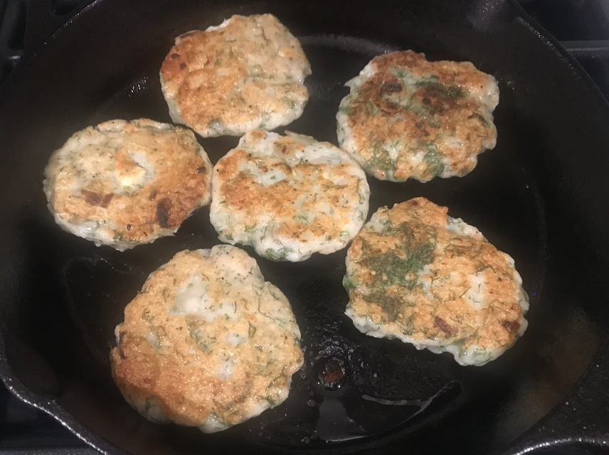

| Other | Meat | Veggie | Fruit |
|---|---|---|---|
| nuoc mam | shrimp | dill | |
| nuoc mam pha | tilapia fish | garlic | |
| pepper | shallot | ||
| salt | |||
| sugar | |||
| tapioca starch |
| instructions |
|---|
| Want a 1 fish : 0.5 shrimp ratio, cut into small pieces |
| Process shallots and garlic in a food processor |
| Add meat mixture, 1 tbsp of salt, pepper, sugar, nuoc mam, 5 tbsp tapioca starch, and 2 egg whites |
| Process until smooth, then mix in chopped dill |
| Form patties and fry on medium low heat, flipping when golden |
| Serve cha ca with rice and nuoc mam pha |